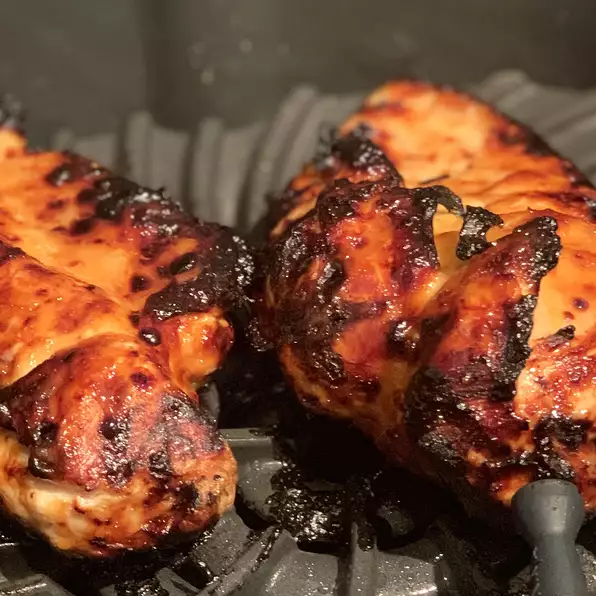

Barbeque

Description
Per Serving: 266 calories; protein 24.7g; carbohydrates 22g; fat 8.3g; cholesterol 69.8mg; sodium 617.6mg. Full Nutrition
Review: Wow, the marinade/sauce flavors really absorb itself into the chicken, and I let the flavors set in for a mere half-hour before grilling! The chicken turned out absolutely delicious. I grilled each breast for approx. 4 minutes on each side. They turned out perfect. I then basted them again w/leftover mixture and let them sit on the grill an extra minute before taking them in for consumption. This recipe is definitely a keeper!
Ingredients
- 1 tablespoon and 1 teaspoons Dijon mustard
- 1 tablespoon honey
- ½ tablespoon mayonnaise
- ¼ teaspoon steak sauce
- 1 skinless, boneless chicken breast halves
Steps
- Preheat the grill for medium heat.
- In a shallow bowl, mix the mustard, honey, mayonnaise, and steak sauce. Set aside a small amount of the honey mustard sauce for basting, and dip the chicken into the remaining sauce to coat.
- Lightly oil the grill grate. Grill chicken over indirect heat for 18 to 20 minutes, turning occasionally, or until juices run clear. Baste occasionally with the reserved sauce during the last 10 minutes. Watch carefully to prevent burning!